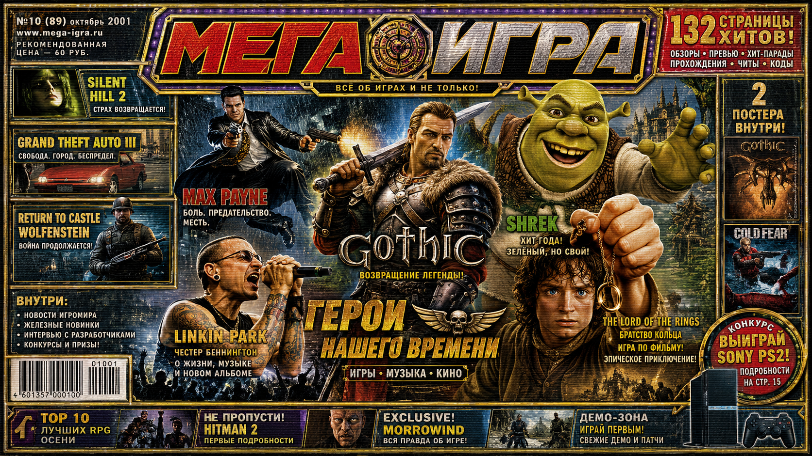

ГЛАВНЫЕ ГЕРОИ НОМЕРА: GOTHIC • GTA III • SHREK • MAX PAYNE • SILENT HILL 2 • ВЛАСТЕЛИН КОЛЕЦ
★★★★★ СРОЧНО: В ПРОДАЖЕ НОВАЯ ВИДЕОКАРТА GEFORCE 2 GTS С T&L! 32 МБ — ВСЕГО 4200 РУБ. ★★★★★ ПОДПИШИСЬ НА «МЕГА ИГРА» И ПОЛУЧИ БЕСПЛАТНЫЙ ДИСК С ДЕМО ★★★★★ WINAMP 2.78 + 400 СКИНОВ — В КАЖДОМ НОМЕРЕ! ★★★★★
В ЭТОМ НОМЕРЕ — 132 СТРАНИЦЫ ЧИСТОГО АДРЕНАЛИНА!
GOTHIC — ВОЗВРАЩЕНИЕ ЛЕГЕНДЫ!
ЧИТАТЬ СТРАНИЦУ 24 →GTA III: СВОБОДА. ГОРОД. БЕСПРЕДЕЛ!
ЧИТАТЬ СТРАНИЦУ 8 →SILENT HILL 2: СТРАХ ВОЗВРАЩАЕТСЯ
ЧИТАТЬ СТРАНИЦУ 16 →MAX PAYNE: БОЛЬ, ПРЕДАТЕЛЬСТВО, МЕСТЬ
ЧИТАТЬ СТРАНИЦУ 32 →ШРЕК: ХИТ ГОДА! ЗЕЛЁНЫЙ, НО СВОЙ
ЧИТАТЬ СТРАНИЦУ 48 →THE LORD OF THE RINGS: БРАТСТВО КОЛЬЦА
ЧИТАТЬ СТРАНИЦУ 56 →ИНТЕРВЬЮ: ЧЕСТЕР БЕННИНГТОН ИЗ LINKIN PARK
ПОЛНАЯ ВЕРСИЯ НА СТРАНИЦЕ 72 →ТОП-10 ЛУЧШИХ RPG ОСЕНИ 2001
| # | ИГРА | ПЛАТФОРМА | ОЦЕНКА |
|---|---|---|---|
| 1 | Gothic | PC | 97% |
| 2 | Diablo II: Lord of Destruction | PC | 94% |
| 3 | Baldur's Gate II | PC | 93% |
| 4 | Neverwinter Nights | PC | 91% |
| 5 | The Elder Scrolls III: Morrowind | PC | 89% |
| 6 | Return to Castle Wolfenstein | PC | 88% |
| 7 | Arcanum | PC | 86% |
| 8 | Deus Ex (переиздание) | PC | 85% |
| 9 | Pool of Radiance: Ruins of Myth Drannor | PC | 78% |
| 10 | Shrek (сюрприз года!) | PC / PS2 | 82% |
Полный рейтинг и подробности — на 82 странице журнала
ВИДЕОКАРТА GEFORCE 2 GTS 32MB
Только 4199 руб.!
Идеально для Gothic и GTA III.
Купи до 15 октября — получи 3 бонусных диска!
Идеально для Gothic и GTA III.
Купи до 15 октября — получи 3 бонусных диска!
ПРЕВЬЮ СЛЕДУЮЩЕГО НОМЕРА (НОЯБРЬ 2001)
HALF-LIFE 2
Первые скрины из Valve! Гордон возвращается. Или это уже не он?
Первые скрины из Valve! Гордон возвращается. Или это уже не он?
GRAND THEFT AUTO: VICE CITY
Пока только слухи, но мы уже знаем — будет неон, яхты и саундтрек 80-х.
Пока только слухи, но мы уже знаем — будет неон, яхты и саундтрек 80-х.
XBOX — ПЕРВЫЕ ВПЕЧАТЛЕНИЯ
Мы держали в руках. Да, он большой. Да, он мощный. И да, Halo выглядит просто космос.
Мы держали в руках. Да, он большой. Да, он мощный. И да, Halo выглядит просто космос.
ПИСЬМА ЧИТАТЕЛЕЙ (ЛУЧШЕЕ ИЗ ПОЧТЫ)
Вася Пупкин, 14 лет, Тольятти:
«Ребята, спасибо за коды на Return to Castle Wolfenstein! Я прошёл всю игру за 4 дня на сложности "Я бог". Моя мама теперь думает, что я гений. На самом деле — вы.»
Алексей "Киллер", 19 лет, Иркутск:
«Gothic — это просто вау. Я даже перестал играть в "Мор. Утопия", потому что там нет орков и квестов про "принеси мне 50 шкурок". Жду продолжения!»
Катя С., 16 лет, Москва:
«Почему в вашем журнале нет статей про The Sims? Я построила дом мечты и теперь хочу чтобы все знали. Пишите про девушек-геймеров пожалуйста!»
МОДЕМ 56K US ROBOTICS
Скачивайте прохождения быстрее!
Только 890 руб. + 3 компакт-диска в подарок
Скачивайте прохождения быстрее!
Только 890 руб. + 3 компакт-диска в подарок
PS2 + 2 ДЖОЙСТИКА + GTA III
Выиграйте в нашем конкурсе!
Подробности на стр. 15
Выиграйте в нашем конкурсе!
Подробности на стр. 15
CD "1000 ИГР 2001"
Всё на одном диске!
Пираты — в тюрьму, а мы легально ;)
Всё на одном диске!
Пираты — в тюрьму, а мы легально ;)
Лучше всего просматривать сайт в Internet Explorer 5.5 при разрешении 800×600
Сайт работает даже на модеме 28.8 кбит/с (проверено!)
Сайт работает даже на модеме 28.8 кбит/с (проверено!)